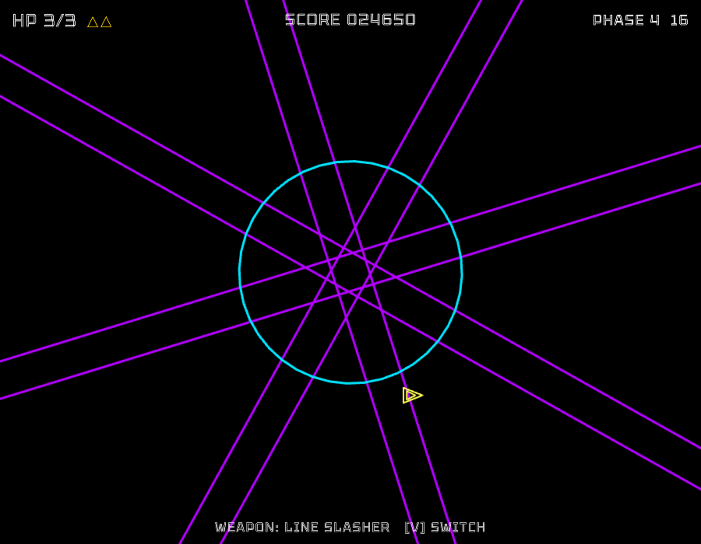

Stage
Occültacresburg
Occültacresburg is the stage of the Crystal of Speed, and its boss is the dragon Plasmadrache.
Story
The Crystal of Speed ended up in Occültacresburg. A piece cracked off as it landed: the Line Slasher.
How stages work
You can play the four stages in any order, and the first time you enter one it starts with a tutorial. Every stage is one screen and a string of attack phases, and it ends in a boss. Each stage teaches you its weapon and gives it to you for good. Every stage also ends with its crystal: shoot it 9 times to extract it. Any shot works, and it never hurts you, but the Mothership closes in meanwhile and its edge hits for 3.
This stage
- Boss: Plasmadrache
- Weapon you get: Line Slasher
- Crystal: Crystal of Speed
- Extraction: the Mothership comes from below, with 8 bombs.

